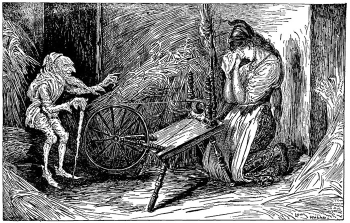

|
Once there was a miller who was poor, but who had a beautiful daughter. Now it happened that he had to go and speak to the King, and in order to make himself appear important he said to him, "I have a daughter who can spin straw into gold." The King said to the miller, "That is an art which pleases me well; if your daughter is as clever as you say, bring her to-morrow to my palace, and I will try what she can do." And when the girl was brought to him he took her into a room which was quite full of straw, gave her a spinning-wheel and a reel, and said, "Now set to work, and if by to-morrow morning early you have not spun this straw into gold during the night, you must die." Thereupon he himself locked up the room, and left her in it alone. So there sat the poor miller's daughter, and for the life of her could not tell what to do; she had no idea how straw could be spun into gold, and she grew more and more miserable, until at last she began to weep. But all at once the door opened, and in came a little man, and said, "Good evening, Mistress Miller; why are you crying so?" "Alas!" answered the girl, "I have to spin straw into gold, and I do not know how to do it." "What will you give me," said the manikin, "if I do it for you?" "My necklace," said the girl. The little man took the necklace, seated himself in front of the wheel, and "whirr, whirr, whirr," three turns, and the reel was full; then he put another on, and whirr, whirr, whirr, three times round, and the second was full too. And so it went on until the morning, when all the straw was spun, and all the reels were full of gold. By daybreak the King was already there, and when he saw the gold he was astonished and delighted, but his heart became only more greedy. He had the miller's daughter taken into another room full of straw, which was much larger, and commanded her to spin that also in one night if she valued her life. The girl knew not how to help herself, and was crying, when the door again opened, and the little man appeared, and said, "What will you give me if I spin that straw into gold for you?" "The ring on my finger," answered the girl. The little man took the ring, again began to turn the wheel, and by morning had spun all the straw into glittering gold. The King rejoiced beyond measure at the sight, but still he had not gold enough; and he had the miller's daughter taken into a still larger room full of straw, and said, "You must spin this, too, in the course of this night; but if you succeed, you shall be my wife." "Even if she be a miller's daughter," thought he, "I could not find a richer wife in the whole world." When the girl was alone the manikin came again for the third time, and said, "What will you give me if I spin the straw for you this time also?" "I have nothing left that I could give," answered the girl. "Then promise me, if you should become Queen, your first child." "Who knows whether that will ever happen?" thought the miller's daughter; and, not knowing how else to help herself in this strait, she promised the manikin what he wanted, and for that he once more span the straw into gold. And when the King came in the morning, and found all as he had wished, he took her in marriage, and the pretty miller's daughter became a Queen. A year after, she had a beautiful child, and she never gave a thought to the manikin. But suddenly he came into her room, and said, "Now give me what you promised." The Queen was horror-struck, and offered the manikin all the riches of the kingdom if he would leave her the child. But the manikin said, "No, something that is living is dearer to me than all the treasures in the world." Then the Queen began to weep and cry, so that the manikin pitied her. "I will give you three days' time," said he, "if by that time you find out my name, then shall you keep your child." So the Queen thought the whole night of all the names that she had ever heard, and she sent a messenger over the country to inquire, far and wide, for any other names that there might be. When the manikin came the next day, she began with Caspar, Melchior, Balthazar, and said all the names she knew, one after another; but to every one the little man said, "That is not my name." On the second day she had inquiries made in the neighborhood as to the names of the people there, and she repeated to the manikin the most uncommon and curious. "Perhaps your name is Shortribs, or Sheepshanks, or Laceleg?" but he always answered, "That is not my name." On the third day the messenger came back again, and said, "I have not been able to find a single new name, but as I came to a high mountain at the end of the forest, where the fox and the hare bid each other good night, there I saw a little house, and before the house a fire was burning, and round about the fire quite a ridiculous little man was jumping: he hopped upon one leg, and shouted--- "To-day I bake, to-morrow brew, The next I'll have the young Queen's child. Ha! glad am I that no one knew That Rumpelstiltskin I am styled." You may think how glad the Queen was when she heard the name! And when soon afterwards the little man came in, and asked, "Now, Mistress Queen, what is my name?" at first she said, "Is your name Conrad?" "No." "Is your name Harry?" "No." "Perhaps your name is Rumpelstiltskin?" "The devil has told you that! the devil has told you that!" cried the little man, and in his anger he plunged his right foot so deep into the earth that his whole leg went in; and then in rage he pulled at his left leg so hard with both hands that he tore himself in two. |
TL;DR:http://rumpelstiltskincheyenneboyd.weebly.com/the-story.html The tale of Rumpelstiltskin begins when a poor miller tells his king that his daughter can spin straw into gold in order to make himself seem more important. The king orders her brought to the palace so that he may test her intriguing talent. The poor miller’s daughter is put into a room filled with straw and told that she must spin it all into gold before the next day or she will die. The poor girl begins to weep because she knows she cannot complete this task and suddenly a small man walks in and asks her what is wrong. After she explains, he asks, “What will you give me if I do it for you?” She gives him her necklace and he spins all of the straw into gold for her before morning. The king is stunned by her ability and orders her to do the same the next day with a larger room filled with straw. This time, the poor miller’s daughter gives the small man her ring and he again spins it all into gold. The king is again amazed and gives her one final test in a still larger room full of straw and proclaims that if she does this, she will be his wife and become queen. This time, the girl has nothing left of value to give to the small man and so he says, “Then promise me, if you should become Queen, to give me your first child.” The miller’s daughter agreed because she could think of nothing else to do, and the small man again spun the gold. A year later, the poor miller’s daughter has become the Queen and has a beautiful child. The small man returns to her, wanting what she had promised him and the Queen cries and laments over having to give up her child. He takes pity on her and gives her three days to find out what his name is. If she can figure it out, she may keep the child. In short, the Queen tried every name she could possibly think of and even sent her messengers throughout the land to search for different names. Two days passed and she still had no idea what the small man’s name really was. On the third day, the messenger came back to her and said that he could find no more new names but that he had seen a little man jumping around a fire shouting, “Today I bake, tomorrow brew, The next I’ll have the young Queen’s child. Ha! Glad am I that no one knew That Rumpelstiltskin I am styled.” Shortly after the messenger told her this, the small man came in and she guessed that his name was Rumpelstiltskin. The little man cried, “The devil has told you that!” and plunged his foot so far into the earth that when he pulled the other leg, he tore himself in two.  |